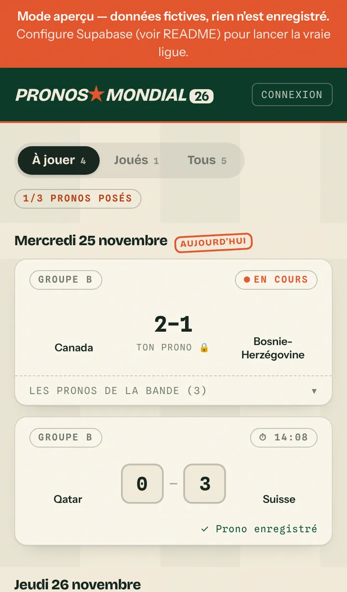

Projet personnel · autre projet
Pronos Mondial 26 : les pronostics de la Coupe du monde entre proches
Chacun pronostique les scores avant le coup d'envoi, les points tombent automatiquement et le classement se met à jour tout seul.
- Année
- 2026
- Cadre
- Projet personnel
- Équipe
- Seul
- Accès
- Réservé (sur invitation)
Application privée : pas de lien public.
01Le projet
Application privée de pronostics de la Coupe du monde entre proches. Les règles sont garanties par la base de données (Row Level Security) : code d'invitation, pronostics verrouillés au coup d'envoi et cachés jusqu'au début du match.

Chaque match affiche son groupe, l'heure du coup d'envoi et le pronostic saisi. Une fois le match commencé, le prono est verrouillé (cadenas) et ceux des autres joueurs deviennent visibles dans « Les pronos de la bande ».
02Fonctionnalités principales
- Barème automatique : 3 points pour un score exact, 1 point pour le bon résultat.
- Classement avec podium.
- Page d'administration pour saisir les résultats.
03Architecture
- Next.js 15App Router · React
- SupabaseAuth · API
- PostgreSQLRow Level Security